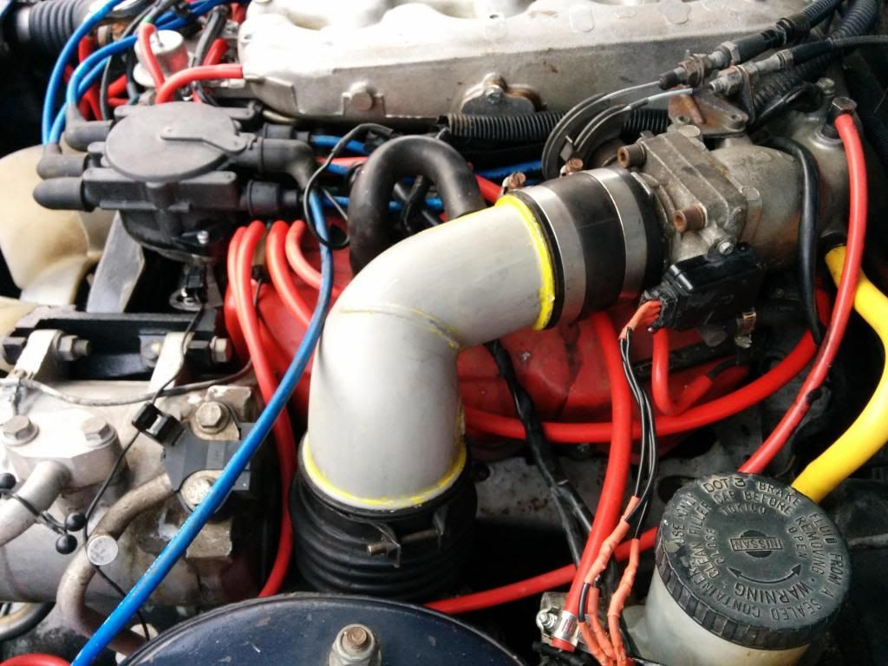
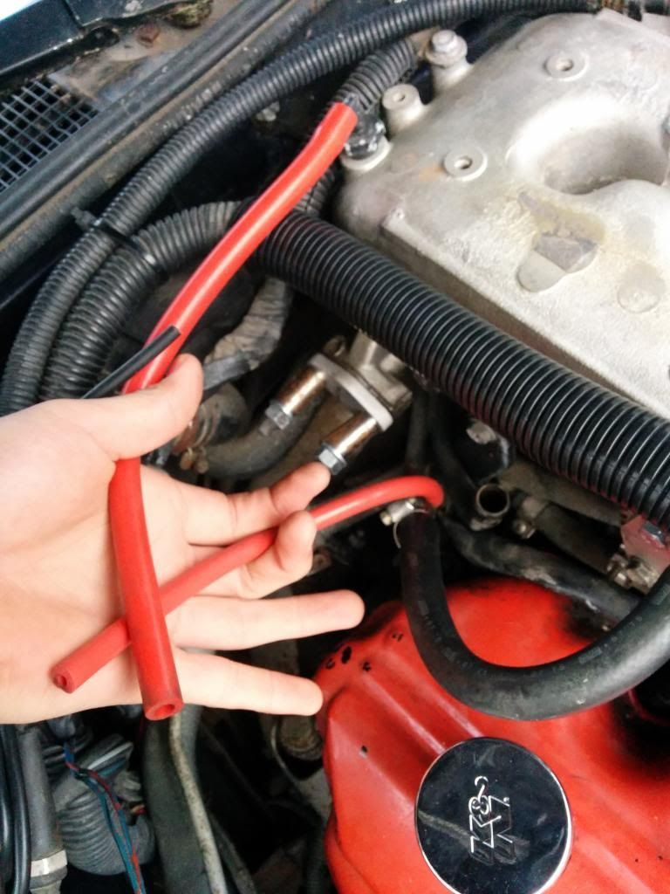
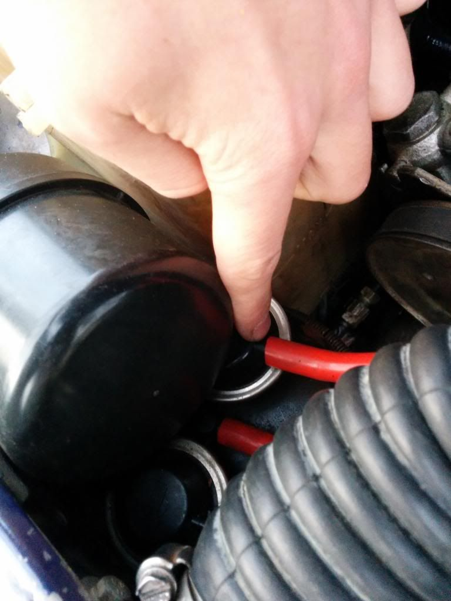
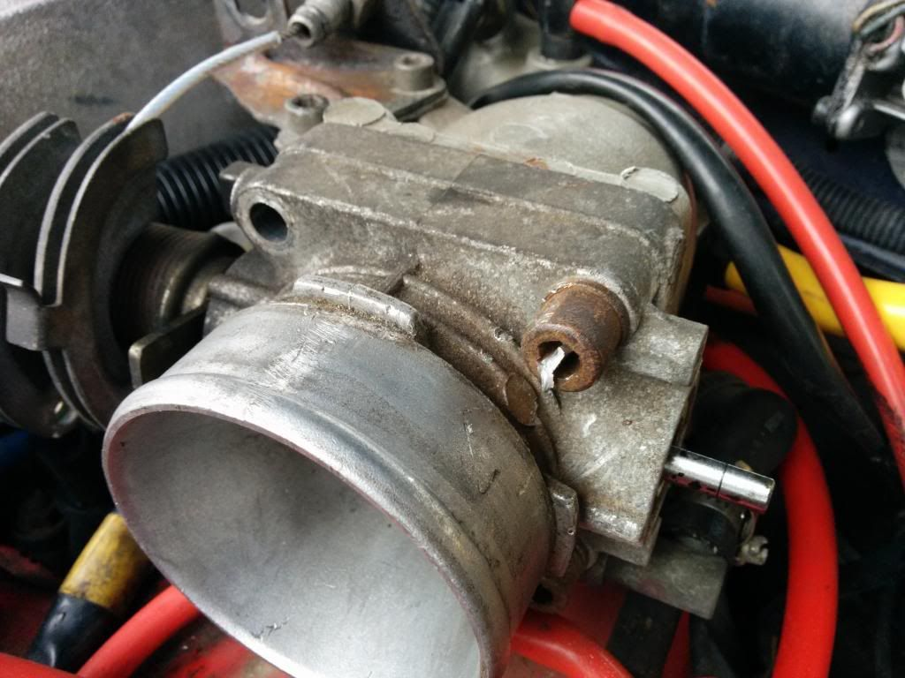

-
I'll get to it this weekend. I figured as a temporary solution the cheapo duct would work, but obviously I was very wrong. Original intake pipe will go back on, as well as the line from the intake pipe to the driver's side valve cover. What about the passenger's side, though, now that I've removed the PCV? Can I just put the filter on that?
1986 300ZX N/A 5Speed project. Needs work, but that's the point, isn't it? -
If the line attaches in between the MAF and the air filter, it will be fine, but you need a catch can of some sort in between there or else MAF sensor will get fukd by the oil vapor.sigpic -
So the line should actually be before the MAF?
1986 300ZX N/A 5Speed project. Needs work, but that's the point, isn't it? -
Time for an update. I got out the heat gun, sealed up the original intake pipe, and put it back on. Put the breather on the passenger side, because now that the PCV is blocked off, there is nowhere for that to connect to.

But I still have three vacuum lines that I don't know what they should be connected to. The first is the original one I mentioned before. I'm still not clear on where it should go, as I guess the one to the cruise control has been removed, and I don't see where to connect it. Also, there are two more that I had forgotten about:

The smaller one in this picture, which is really just connected to the smallest line of the rear vacuum gallery.

Also this one, which comes of the charcoal canister.
Obviously I need to get the vacuum sorted out to know for sure, but the OEM intake pipe didn't seem to help very much. And yes, I did check that the seal was at least water tight. So right now I guess I'd just like to figure out what to do with these vacuum lines. Also, I might as well remove the cruise control at this point, as my headlight switch doesn't have the switch to activate it anyways.
1986 300ZX N/A 5Speed project. Needs work, but that's the point, isn't it? -
Looks like the small red vacuum hose was going to the egr solenoid, you should plug that one with a vacuum cap.
The bigger red vacuum tube you should run to a one way check valve, can find from the "help" section at parts store. After the check valve run that to the vacuum tank, located above the carbon canister.
The smaller black vacuum hose is it coming from a hole in the bulk head? If it is, run that to the vacuum tank, too.
That big red hose will cause a large vacuum leak, definitely enough to cause drivability issues.http://z31performance.com/showthread…2-2-(-now-NA2T
My build thread (: -
Also the hose you pointed out that comes off the carbon canister Is supposed to run to the little nipple on the intake pipe that's after the maf, just under the ac compressor
Also.. take the breather off all together and run a good hose to the pcv valve. With a filter on there you can let moisture and other stuff into the valve cover and eventually into your oil.
Personally I find it is best to keep it a closed system.http://z31performance.com/showthread…2-2-(-now-NA2T
My build thread (: -
So I went to the parts store and they didn't have a small enough check valve, I'll check a different store later. Which way should it be installed when I get it? Anyways do you mean run the big red line to the small ish rounded tank above the carbon canister? It only has two very small inlets. Also I don't have a place for the carbon canister line on my intake pipe, but I can make one if that is where it needs to go.
The situation now is that the smallest line is capped, the line from the carbon canister still doesn't go anywhere, and the big line doesn't go anywhere either. I tried capping both lines, and the car didn't seem any better than with them open. I'm thinking maybe the MAF is doing strange things, though I don't know how I would test that. But overall the car doesn't idle, and misfires throughout the RPM range whether the two lines that I am trying to locate are capped or open. It seems then that I have an additional issue to the vacuum lines, but I'm pretty lost. I will mention that though the distributor cap is brand new, it is not OEM Nissan.
1986 300ZX N/A 5Speed project. Needs work, but that's the point, isn't it? -
I've been reading a few other threads, and it sounds like perhaps I have a fuel problem, since I have replaced most of the spark related stuff.
Based on this thread: http://z31performance.com/showthread…ssue-on-an-85T and this thread http://z31performance.com/showthread…a-bigger-issue Maybe I have clogged injectors or a bad FPR. The FPR looks new and the PO claims to have replaced it, but I have an adjustable one sitting in the parts car that I think I will throw on there. If not, I wonder if I'm going to need to pull the injectors. Still, it sounds like his car still runs better than mine. Once I install the adjustable FPR, I'll post a video just in case it can help.
1986 300ZX N/A 5Speed project. Needs work, but that's the point, isn't it? -
FPR's hardly ever go bad.
Fuel supply issue wouldn't result in the problems you are describing.
This is a good page that might help, although it's for a turbo.
http://www.thumper300zx.com/z31/vacuum/vacuum.htm
When you find this thing, it's going to be something really stupid.
If you have access to an air compressor, you can do a "boost leak check" to pressurize the intake with the engine off and listen for vacuum leaks.sigpic -
I actually do have a small air compressor, I'll try that. Not quite sure how I would pressurize the intake, except after the TB though.
I guess I'll finish installing the adjustable FPR since I have it anyways.
I actually used that page when I bought the silicone vacuum hoses for the initial replacement. I'll go through everything again so that I can be sure I didn't miss something.
1986 300ZX N/A 5Speed project. Needs work, but that's the point, isn't it? -
You just need a 3" PVC cap. Drill hole and thread in a air coupler. Replace the MAF with this tool. Turn your air compressor regulator down to 14psi or so. Any air leaking needs to be investigated.
Don't put on that FPR, as you might complicate things more. Unless it has an on-board pres gauge. Then you can verify fuel pres. But once again, fuel delivery issue would manifest itself under heavy load, and you seem to not be having that problem. Bad injectors would have rough idle/dead cylinder. Take FPR back to the store.sigpic -
I replied before noticing that you had posted again. Anyways, the FPR does have a gauge, which is the other reason that I wanted to install it. But as it says below, you were right about it not being a bad FPR. It still acts the same. I'm about to go buy the PVC cap and grab my air compressor to test the vacuum.
You were right about the FPR, different one didn't help. But I at least now have an adjustable FPR.
Also something perhaps worth mentioning, I had a cap on the larger line coming off of the back of the intake manifold, and after a short test drive it was launched off. Probably just the backfire, but I though I would note it at least.
Also I'm guessing you'll be right about it being something stupid once I find it. But until I do, it is frustrating.
1986 300ZX N/A 5Speed project. Needs work, but that's the point, isn't it? -
After pressurizing the system, it actually appears that the first leak is right behind the throttle body, on the bottom somewhere. I'm going to remove the TB to reseal it and then see what happens. But it appeared to be a small leak, just a slight whistle, so I wonder if it could cause all these problems.
1986 300ZX N/A 5Speed project. Needs work, but that's the point, isn't it? -
Also, with the breather on the passenger side, and the suction tube from the driver VC to the intake pipe is still a vacuum leak.
1986 300ZX Turbo…sold
1990 Skyline GT-R…new money pit
2014 Juke Nismo RS 6-speed…daily -
So I need to put the pcv valve back on? I blocked it off based on some previous instructions. It sounds like I either need two breathers or both vc going to the OEM spot.
Also, this happened:

So the throttle body removal might take a bit longer than expected. What a pain. I even had new hex bolts to install this time so that this wouldn't happen.
1986 300ZX N/A 5Speed project. Needs work, but that's the point, isn't it?

Copyright © 2006–. All rights reserved. Privacy Policy